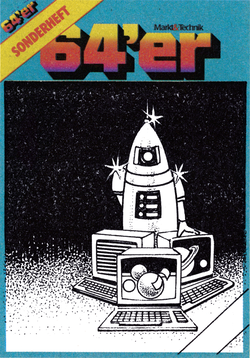

Neue Produkte
Neue Print Shop Icons
Bekanntermaßen ist nicht jeder, der ein gutes Grafik-Programm benutzt, auch in der Lage eigene Grafiken zu erstellen. Den Benutzern von Print Shop, die keine zeichnerischen Fähigkeiten besitzen, bleibt nur die Möglichkeit, auf die mitgelieferten Icons zurückzugreifen. Für alle diese Leute wurde jetzt von einem noch relativ neuen Softwareteam, welches sich besonders mit der Herstellung von Grafiken beschäftigt, eine Diskette mit Kleingrafiken für Print Shop-Benutzer veröffentlicht. Auf der Diskette befinden sich 100 neue Icons, mit deren Hilfe weitere individuelle Grüße, Briefbogen etc. erstellt werden können. Die Diskette kann für 20 Mark Vorkasse (bar oder Scheck) inklusive Porto, Verpackung und Mehrwertsteuer bestellt werden.
(jk)Bezugsquelle: Software Studio Plieth, Bergisch Gladbacher Straße 696, 5000 Köln 80
1200-Bit/s-Akustikkoppler billiger
Die Firma »Lange Communications« bietet den CTK-Akustikkoppler »Adam« für 1851 Mark an. Der technisch sehr aufwendige Koppler überträgt Daten bis zu einer Geschwindigkeit von 1200 Bit/s im Vollduplex-Betrieb. Als erster Koppler dieser Leistungsklasse besitzt er eine ZZF-Zulassung, hat also den Segen der Bundespost.
(tr)Info: Lange & Co. GmbH, Ünninghauser Straße 70, 4780 Lippstadt, Tel. 02945/5449
Tasword nun auch für den C 64
Das Textverarbeitungsprogramm Tasword nimmt bei CPC, MSX und ZX-Spectrum Computern eine führende Position ein. Tasword wird jetzt auch in einer deutschen Version mit Umlauten und ausführlichem Handbuch für den C 64 angeboten. Für den sehr günstigen Preis von 49,90 Mark erhält man ein Programm, das sich durch komfortable Bedienung und eine offene Konzeption auszeichnet. Jeder Anwender kann seine individuelle Version erstellen und auf Diskette abspeichern. Um die Arbeit so bequem wie möglich zu machen, wurde auf einen Kopierschutz verzichtet. Neben den gängigen Leistungsmerkmalen enthält Tasword 64 die Möglichkeit eines frei definierbaren Zeichensatzes, komfortable Druckeranpassung, zahlreiche Blockoperationen und vor allem einen 80-Zeichen-Modus, in dem weiterhin alle Funktionen zur Verfügung stehen. Es handelt sich also nicht um einen reinen »Zeige-Modus«. Tasword 64 ist ab sofort lieferbar.
(sk)Info: Profisoft GmbH, Sutthauser Str. 50/52, 4500 Osnabrück, Tel. 0541/53905
Die Kuriositätenecke
Daß sich Firmen, die ähnliche Produkte herstellen, aufgrund des Konkurrenzdrucks nicht so sehr mögen, ist bekannt. Weniger bekannt ist, daß das auf die Programmierer selten zutrifft. So sind gerade die Adventure-Programmierer für ihre Kameradschaft bekannt. Vor einigen Wochen fuhr beispielsweise Anita Sinclair (Magnetic Scrolls, The Pawn) mit Brian Moriarty (Infocom, Wishbringer) zu den Austin-Geschwistern (Level 9, The Price of Magik) um ein kleines Schwätzchen zu halten. Ein Pressesprecher von Rainbird, der Firma, die Magnetic-Scrolls-Programme vertreibt, meinte vor kurzem: »Der einzige Ärger, den wir mit Anita haben, ist, daß sie viel zu nett zu anderen Leuten ist. So erzählt sie jedermann, wie gut Infocom-Adventures sind.«
— »Visually Stunning« — Dieser Ausdruck läßt sich vielleicht mit »Unfaßbar gute Grafik« umschreiben. Mit diesem englischen Ausdruck belegten zwei hart konkurrierende englische Zeitschriften das Spiel »Antiriad« von Palace Software. Beide Zeitschriften waren von der guten Grafik derart überrascht, daß sie jeweils das Bildschirmfoto von Antiriad auf den Kopf stellten. War das nur ein böser Zufall, daß sowohl der Text wie auch das falsche Bild bei den beiden identisch ist?
(bs)Software-Remix
Zwei Spiele-Klassiker für den C 64 sind wieder neu aufgelegt worden. Die beiden Programme »Paradroid« und »Uridium« gibt es jetzt zusammen in einer Spielesammlung zum Preis eines einzelnen Spiels. Aber damit nicht genug: Der Programmierer Andrew Braybrook hat extra für diese Sammlung beide Programme nochmal gründlich überarbeitet. So ist Paradroid jetzt fast doppelt so schnell wie die erste Version. Uridium bietet dagegen 16 neue Raumschiffe mit neuer Grafik sowie geänderte Angriffs-Taktiken. Außerdem darf man jetzt jederzeit landen, um so schneller durch die einzelnen Level zu kommen. So kommen die beiden, etwa ein Jahr alten Spiele zu neuen Ehren. Wer die beiden Programme noch nicht hat, sollte hier unbedingt zugreifen. Auch die Fans der beiden Spiele werden an den neuen Versionen ihre helle Freude haben.
(bs)Info: Hewson, Hewson House, 56b Milton Trading Estate, Milton, Abingdon, Oxon OX14 4RX, England
Software für einen guten Zweck
Schallplatten, deren Verkaufserlös einem guten Zweck zugeht, sind nichts Neues mehr. Jetzt gibt es aber auch eine Spiele-Sammlung, mit der man beim Kauf gleichzeitig eine wohltätige Organisation unterstützt. Diese Aktion unter dem Namen »Off the Hook« (übersetzt: Weg mit der Sucht) wird von der Firma Rushware in Zusammenarbeit mit der Deutschen Drogenhilfe durchgeführt. Dieser Institution sollen die Einnahmen des Groß- und Einzelhandels zur Verfügung gestellt werden. Aber nicht nur der edle Zweck sollte Kaufanreiz sein: Für nur 20 Mark erhält man mit »Off the Hook« 10 Spielprogramme bekannter englischer Firmen. Hier eine Liste:
— Pitfall (Activision)
— Space Pilot 2 (Anirog)
— Psytron (Beyond)
— Death Star (System 3)
— Talladega (U.S. Gold)
— Black Thunder (Quicksilva)
— Kong strikes back (Ocean)
— Sheep in Space (Llamasoft)
— The Fall Guy (Elite)
— Demons of Topaz (Firebird)
Da einerseits diese Spielsammlung ein fantastisches Preis/Leistungs-Verhältnis hat (jedes Spiel nur zwei Mark) und außerdem ein wirklich guter Zweck unterstüzt wird, können wir »Off the Hook« nur empfehlen.
(bs)Rushware GmbH, Daimlerstr. 11, 4044 Kaarst 2
Erweiterung für die NCE-Maus
Für das Grafikprogramm »Cheese« zur NCE-Maus gibt es jetzt eine Erweiterung, die das Arbeiten mit dem System wesentlich verbessert. Die Ladegeschwindigkeit der Cheese-Bilder wurde beschleunigt und kann ähnlich dem Multitasking mit dem Ablauf eines Basic-Programmes gekoppelt werden. Außerdem ist ein Textfenster definierbar, in dem die normale Bildschirmsteuerung des C 64 aktiv ist. Beim Einschalten eines Cheese-Bildes wird das neue Bild praktisch über ein schon bestehendes altes gelegt, und man hat zwei Bilder zur Verfügung, die beide Sprites beinhalten können. Weiterhin wurden neue Basic-Befehle integriert und die Fehlerabfrage bezüglich des Ladens und Anzeigens der Bilder verbessert. Als besondere Zugabe können nun auch Bilder, die im Koala-Format vorliegen, in ein Cheese-Bild transformiert beziehungsweise eingearbeitet werden.
(jk)Info: Nordphon Computer GmbH, Fliederbogen 1, 2399 Tarp, Tel. 04638/1536
C 16, C 116 und Plus/4

C 16- und Plus/4-Besitzer aufgepaßt! Viele neue Listings zum Abtippen und interessante Grundlagen enthält das 64er-Sonderheft 14. Unter anderem erwartet Sie ein riesiges und fantastisches Grafikprogramm, das es für den C 16 oder Plus/4 noch nicht gegeben hat. Es ermöglicht dreidimensionales räumliches Konstruieren, ein Muß für Designer, Konstrukteure und Grafikfans. Auch die Apfelmännchen-Grafik erfreut sich immer größer werdender Beliebtheit. Sie finden ein entsprechendes Listing in diesem Sonderheft. Falls Sie Interesse an Spielen haben, kommen Sie ebenfalls voll auf Ihre Kosten. Sie können auf Mördersuche gehen oder Ihre Geschicklichkeit beweisen. Wenn Sie Kummer haben, fragt Sie ein geduldiger Computerpsychologe Löcher in den Bauch, reden Sie mit ihm! Für Programmierer und Neugierige haben wir eine ganze Menge Grundlagen und Tips & Tricks zusammengestellt. Sie erfahren, wie man mit der Floppy 1551 arbeitet, wie Grafik programmiert wird und was zum Thema Sortieren zu sagen ist. Wir stellen Ihnen die besten und preiswertesten Drucker vor und testen Joysticks. Auch professionelle Spielesoftware haben wir nicht vergessen und geben Ihnen einen Überblick über die besten Spiele auf dem Markt. Ein Heft, das Sie auf keinen Fall versäumen sollten.
Das 64'er Sonderheft 14 gibt's ab Ende Januar an jedem Kiosk.
(gk)Englisch-Test für den C 64/C 128
Mit »Englisch Test I« wird seit kurzem ein Vokabel-Lernprogramm angeboten, das kaum noch Wünsche offen läßt. Mit diesem Programm lassen sich sowohl Vokabeln als auch unregelmäßige Verben üben. Im Gegensatz zu vielen Vokabeltrainern sind bei »Englisch Test I« bereits 1000 Vokabeln vorgegeben. Der Programmteil »Unregelmäßige Verben« wartet mit 200 vorgegebenen Verbformen auf. Mit Joystick oder Tastatur läßt sich das Programm sehr komfortabel bedienen. Eigene Vokabeln und Verben können natürlich zusätzlich eingegeben werden. Dabei können die deutschen Übersetzungen auch wirklich Deutsch eingegeben werden, da das Programm mit geändertem Zeichensatz arbeitet. Die Umlaute liegen an der gleichen Stelle, wie man es von einer Schreibmaschine gewohnt ist. Auch die Buchstaben y und z befinden sich an der richtigen Stelle nach DIN. Englisch Test I gibt dem Anwender zweimal die Möglichkeit zu antworten. Je nachdem, ob die Antwort sofort richtig, nach dem zweiten Anlauf richtig oder falsch war, erhalten Sie die Bewertung zwischen 1 (sehr gut) und 6 (ungenügend). Das Programm gibt außerdem an, welche Anstrengungen unternommen werden müssen, um das Lernergebnis zu steigern. Drei weitere Programme sind inzwischen ebenfalls auf dem Markt. »Englisch Test II« ist eine Version für Fortgeschrittene, während Englisch Test III den Könnern empfohlen wird. Die vierte Version enthält Vokabeln aus dem wirtschaftlichen und geschäftlichen Bereich. Durch den Namen »Englisch Manager« wird schon auf die Zielgruppe hingewiesen. Die Programme sind bei Dekatron erhältlich. Die Preise:
| Englisch Test I | 39 Mark |
| Englisch Test II | 39 Mark |
| Englisch Test III | 39 Mark |
| Englisch Manager | 39 Mark |
Die drei Englisch Test-Programme kosten zusammen 109 Mark und alle vier 139 Mark.
(C. Q. Spitzner/kn)Dekatron, Adalbert-Stifter-Weg 9, 6103 Griesheim, Tel. 06155/61874
Der Lader der Zukunft?
Anläßlich des Erscheinens des ersten Zusatz-Fragen-Pakets für das Computerspiel »Trivial Pursuit« weist der Hersteller Domark nochmals auf das Unilode-System hin. Diese Bezeichnung steht für ein spezielles Kassetten-Format, das von drei verschiedenen Computern, dem C 64, dem Schneider CPC und dem Sinclair Spectrum, geladen werden kann. Natürlich wird für jeden Computer ein eigenes Ladeprogramm benötigt. Zum Laden von Datensätzen, wie eben den Zusatzfragen bei »Trivial Pursuit«, ist Unilode ideal.
David Pringle, Direktor bei der Entwicklerfirma ODE, erklärte die Vorteile von Unilode: »Die gesamte Computerindustrie hat Vorteile mit diesem System. Wir sparen uns die Kosten und die Zeit für die Entwicklung und Herstellung der drei verschiedenen Kassetten. Die Händler benötigen weniger Lagerfläche, da sie nicht drei verschiedene Versionen auf Lager halten müssen. Außerdem fällt das Bestellen leichter. Der Kunde hingegen hat eine größere Chance, das Produkt auch bei kleinen Händlern auf Anhieb zu finden.«
(bs)Erster Frauen-Computerclub
Aus Hamburg erreichte uns die Meldung über die Gründung des ersten Frauen-Computerclubs in Deutschland. »Zorra« wird die neue Vereinigung von ihren Mitgliedern genannt, die ihre Hauptaufgabe darin sehen, die Hemmschwelle vieler Frauen in bezug auf den Computer abzubauen. Die Mitglieder kommen aus allen Berufssparten und möchten noch viele Kenntnisse austauschen und dazulernen. Gesucht sind daher noch Fachfrauen aller Art, die sich für Gedankenaustausch und Arbeit am und mit dem Computer interessieren.
(jk)Info: Zorra, c/o Bettina Fischer, Gropiusring 33, 2000 Hamburg 60
»Starter-Kits« für amerikanische Netzwerke
Computerland Mannheim bietet ab sofort exklusiv sogenannte Starter-Kits für amerikanische und europäische Mailboxen an. Es sind im folgenden: Compuserve Subscription-Kit, The Source Starter-Kit, Delphi Starter-Kit, Deutsche Mailbox Accounts, Membran Startpaket. Die Starter-Kits beinhalten bereits Benutzer- und Menühandbücher der jeweiligen Mailboxen. Darüber hinaus wird die vom Informationsanbieter empfohlene Kommunikationssoftware angeboten (VidTex, MBT, Login etc.).
(jk)Bezugsquelle: Computerland Mannheim, c/o Hr. Deter, Augusta-Anlage 59, 6800 Mannheim, Tel. 0621/449088
Neue Datex-P-Gebühren
Interessante Neuigkeit für Datex-P-Benutzer: Zum 1. Januar 1987 wird die Deutsche Bundespost die Datex-P-Gebühren »umlagern«: Ab diesem Zeitpunkt gilt dann von Montag bis Freitag von 8 bis 18 Uhr einheitlich der 50-Sekunden-Takt und in der übrigen Zeit und an Feiertagen der 75-Sekunden-Takt bei der Anwahl des nächsten PADs. Dieser neue Tarif ist einheitlich, das heißt, daß die Entfernung vom Anrufer zum gewählten Datex-P-Knotenpunkt keine Rolle mehr spielt.
Für Münchner zum Beispiel wird Datex-P dadurch drastisch teurer: Ihr Vorteil durch den 8-Minuten-Ortstakt entfällt. Billiger wird es für Teilnehmer, die vom nächsten PAD sehr weit entfernt wohnen. Diese mußten bisher im ungünstigsten Fall einen 12-Sekunden-Takt bezahlen.
Die Post hat versichert, daß sie durch diese Umlagerung keine zusätzlichen Gebühren einnehmen wird. Man wolle lediglich mehr Gleichberechtigung schaffen, und dadurch das Datex-P-Netz auch außerhalb der Großstädte attraktiver machen.
(tr/hm)Info: Bei jedem Postamt, Gebührenblatt 66 P